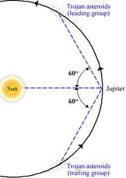

Asteroids sharing an orbit with a planet, but which are located at the leading (L4) and trailing (L5) Lagrangian points, are known as Trojan asteroids. Although Trojan asteroids have been discovered for Mars (4 to date, 1 at L4 and 3 at L5) and Neptune (8 Trojans, 6 at L4 and 2 at L5) and even Earth (1 Trojan at L4), the term ‘Trojan asteroid’ generally refers to the asteroids accompanying Jupiter.

There are currently over 4,800 known Trojan asteroids associated with Jupiter. About 65% of these belong to the leading group (L4) located 60o in front of Jupiter in its orbit, while the other 35% cluster around the L5 Lagrangian point and trail 60o behind Jupiter. Although their orbits are stabilised at the Lagrangian points by gravitational interactions with Jupiter and the Sun, their actual distribution is elongated along the orbit. Perturbations by the other planets (primarily Saturn) cause the Trojans to oscillate around L4 and L5 by ∼20° and at inclinations of up to 40° to the orbital plane. These oscillations generally take between 150 and 200 years to complete.
Such planetary perturbations may also be the reason why there have been so few Trojans found around other planets. In particular, we assume that the Trojans formed at their present positions at the same time as Jupiter emerged from the solar nebula. If this is correct, we would also expect Saturn to be accompanied by families of Trojan asteroids. That no Trojans are found at the Lagrangian points of Saturn is most likely the result of Jupiter removing them from these stable orbits through gravitational perturbations.
The term ‘Trojan asteroid’ was coined when it was decided to name all asteroids discovered at the L4 and L5 points of Jupiter after warriors in the Trojan war, Greek and Trojan respectively. The exceptions are Hector (a Trojan spy in the Greek camp) and Patroclus (a Greek spy in the Trojan camp), the first two Trojan asteroids discovered and named before the two camps were established.